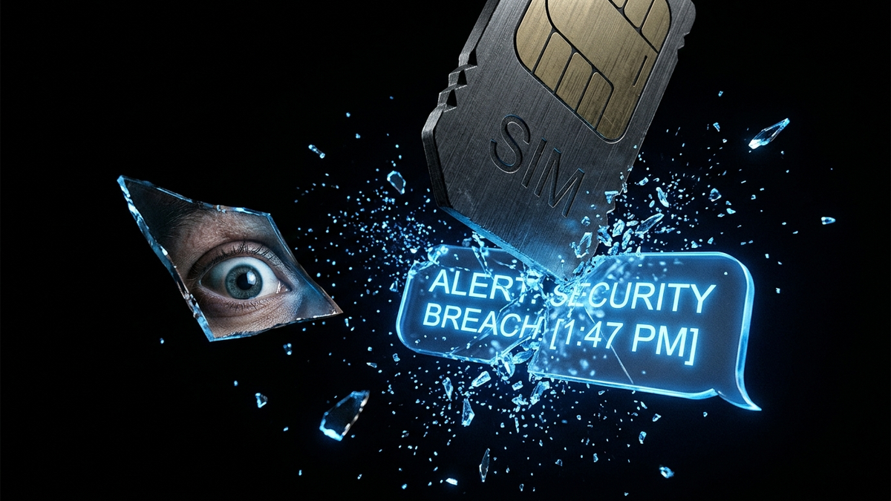

Alright, let's have a real talk. For years, we in the IT world preached the gospel of two-factor authentication (2FA). We told everyone—our clients, our parents, our friends—to turn it on. And the easiest, most common way to do that was through a simple text message to your phone. It was a huge step up from just a password, and for a while, it was good enough. That time is over. The game has changed, the bad guys have leveled up, and continuing to rely on SMS for 2FA is like using a screen door as a bank vault.
I've spent 15 years on the front lines, cleaning up the digital wreckage of compromised accounts. I've seen firsthand how clever attackers bypass lazy security. So listen up. I'm not here to scare you with vague hypotheticals. I'm here to show you the specific, very real ways that SMS 2FA is being crushed by attackers every single day, and what you absolutely must do to protect yourself. This isn't just theory; this is the reality of cybersecurity in the 2020s.
Before we dive into the nasty attacks, you need to understand *why* SMS is so vulnerable. The problem isn't your phone, it's the ancient, rickety network that your text messages travel on. This network is called Signaling System No. 7, or SS7 for short. Think of SS7 as the global postal system for phone companies. It’s the behind-the-scenes network that lets a Verizon customer call an AT&T customer, or lets you get a text message when you're roaming in another country. It directs the traffic, telling the network where to send your calls and texts.
Here's the fatal flaw: SS7 was designed in the 1970s. It was built on a principle of absolute trust. The assumption was that the only people with access to the SS7 network would be a handful of massive, state-owned telephone companies. There was no concept of cybercriminals, hackers, or malicious actors on the network. Security wasn't just an afterthought; it was completely non-existent. There's no robust authentication to verify that a request on the SS7 network is legitimate. It's like a postal worker who will redirect your mail to a new address just because someone fills out a form, without ever checking your ID to see if it's really you.
This "trust-based" model is a catastrophe waiting to happen in our zero-trust world. Criminals and intelligence agencies have gained access to the SS7 network. With that access, they can simply issue a command to a telecom switch, telling it, "Hey, all text messages for this phone number? Send them to me instead." You wouldn't know a thing. Your phone would sit there silently, no new messages, while the attacker drains your bank account, resets your email password, and takes over your entire digital life. You're building your security fortress on a foundation of quicksand, and it's starting to sink.
So when a service sends you a 2FA code via SMS, it's not a secure, direct line to your device. It's a digital postcard sent through this creaky, untrustworthy global postal system where malicious actors can read, intercept, or reroute your mail at will. This fundamental weakness is the root of the problem and the reason why any security built on top of it is ultimately doomed to fail against a determined adversary. We're trying to secure 21st-century data with 20th-century telephone technology, and it's a losing battle.
If hacking the global phone network sounds too complex, don't worry—criminals have a much easier, and far more common, method: they just steal your phone number. This is called a SIM swap or "port-out scam," and it is devastatingly effective. It doesn't require sophisticated code or network exploits. It relies on tricking the single weakest link in the entire security chain: the low-paid, undertrained customer service representative at your mobile phone carrier.
Here's how the attack plays out, step-by-step. First, the attacker does their homework on you. They gather personal information from data breaches, your social media profiles, or phishing attacks—things like your full name, address, date of birth, maybe the last four digits of your social security number. Then, armed with this data, they call your mobile provider's support line or walk into a retail store. They pretend to be you. They say they "lost their phone" or "upgraded to a new device" and need to activate a new SIM card for their existing number.
The customer service rep asks a few security questions. But what are those questions? Usually, it's the same data the attacker just found online. The attacker confidently answers, the rep says "No problem," and deactivates your current SIM card. Simultaneously, they activate a new SIM card that the attacker has in their possession. In that instant, your phone goes dead. You lose all service—no calls, no texts, no data. But the attacker's phone lights up. They now *are* you in the eyes of the mobile network. Every call, every text message, and most importantly, every single 2FA code is now being sent directly to their device.
From there, it's a race against time. The attacker immediately goes to your most valuable accounts—your primary email, your bank, your cryptocurrency exchange. They hit the "Forgot Password" link. The service, trying to be helpful, says, "We'll send a verification code to your phone on file to confirm it's you." That code goes straight to the attacker. They enter it, set a new password, and lock you out. Then they repeat the process, using access to your email to pivot and compromise everything else you own. By the time you realize your phone has no service and figure out what happened, your accounts have been emptied and your digital identity is in ruins.
💡 Expert IT Tip: Call your mobile carrier *today*. Do not use the web portal. Speak to a human and specifically ask to add a "Port-Out Protection" and a "Security PIN" or "Passcode" to your account. This PIN should be a complex number that you have never used anywhere else. Explicitly tell them, "I want this PIN to be required for any account changes, including SIM card activations or number transfers, whether in-store or over the phone." This adds a crucial layer of friction that can stop a social engineering attempt in its tracks. Most carriers have this feature, but they don't enable it by default.
Okay, so you've locked down your mobile account with a PIN. You think you're safe from SIM swapping. Think again. A different class of attacker isn't interested in stealing your phone number; they're interested in tricking you into handing over your credentials and your SMS 2FA code in real-time. This is accomplished using a sophisticated Man-in-the-Middle (MitM) attack, often powered by a reverse proxy phishing toolkit. It sounds complicated, but the concept is brutally simple.
You receive a very convincing phishing email or text message. It looks like it's from your bank, or Microsoft, or Google. It says something urgent like "Suspicious Login Detected" or "Your Account Will Be Suspended." It includes a link that looks legitimate. You click it. The webpage you land on looks *identical* to the real login page. The URL in the address bar might even look right at a quick glance. You enter your username and password. But you're not on the real site. You're on the attacker's server, which is acting as an invisible bridge between you and the real service.
Here's the magic. The attacker's server, the "reverse proxy," takes the username and password you just typed and immediately passes it to the *real* login page. The real service, seeing a valid password, then proceeds to the next step: 2FA. It sends a six-digit code to your phone via SMS. On your screen, the fake phishing page now displays a box asking for your "Security Code." You see the text message arrive on your phone, you type the code into the box on the fake site, and you hit "Submit."
Secure your digital wealth with the world's most trusted hardware wallets.
GET YOUR WALLET NOWGame over. The attacker's server captures that 2FA code in the same instant you enter it and passes it to the real website, completing the login process. The proxy then authenticates, steals the session cookie (which is like a temporary key that keeps you logged in), and redirects you to the real website's dashboard. To you, it just looks like a successful login. But in the background, the attacker now has your password *and* the session cookie, giving them full, authenticated access to your account. They can change your password, steal your data, and kick you out, all while you think everything is fine. This entire process is automated and happens in seconds. Your SMS code provided zero protection because you delivered it directly to the thief.
💡 Expert IT Tip: The best defense against this is a combination of user vigilance and hardware. First, *always* be paranoid about links in emails. Manually type the address of your bank or service into the browser. Second, this is where a FIDO2/U2F hardware key like a YubiKey is a game-changer. A hardware key binds your login to the specific, legitimate website domain. If you were on a phishing site, the key would recognize the URL is wrong and simply refuse to provide the cryptographic authentication code. It makes you immune to this entire class of phishing attacks, something an SMS code can never do.
I've spent enough time explaining why your house is on fire. Now let's talk about the fire extinguishers and how to build a house that's fireproof in the first place. Ditching SMS 2FA is not optional, and thankfully, the alternatives are widely available, often free, and vastly more secure. We can categorize them into two main tiers: the great and the gold standard.
Tier 1 (Great): Authenticator Apps (TOTP)
This is your new minimum standard for security. Authenticator apps use a standard called Time-Based One-Time Password (TOTP). When you set it up, the service (like Google or your bank) gives your app a secret "seed" key, usually by having you scan a QR code. From that moment on, your app and the service's server use that secret key and the current time to independently generate the exact same 6-digit code, which changes every 30 seconds. The code is generated entirely on your device. It never travels over the insecure phone network. An attacker would need to steal your phone *and* unlock it to get the code. This completely neutralizes SIM swapping and SS7 interception attacks.
Popular and trusted apps include Google Authenticator, Microsoft Authenticator, and Authy. I personally lean towards Authy because it offers encrypted cloud backups. This means if you lose or break your phone, you can securely recover your 2FA codes on a new device. With Google Authenticator (in its classic form), losing your phone could mean losing access to your accounts forever if you didn't save the backup codes. Your immediate action item is to go into the security settings of every important online account you have, find the 2FA/MFA options, and switch your method from "Text Message/SMS" to "Authenticator App."
Tier 2 (Gold Standard): Hardware Security Keys (FIDO2/U2F)
This is the pinnacle of personal account security, used by journalists, activists, and cybersecurity professionals. A hardware key, like a YubiKey or Google Titan Key, is a small device that plugs into your computer's USB port or connects via NFC to your phone. Instead of a code you type, you simply touch a button on the key to approve a login. It uses powerful public-key cryptography to prove to the service that you are you and you have your physical key. It's like a physical car key for your digital life; without it, no one is getting in.
Hardware keys are superior for two key reasons. First, they are un-phishable. As mentioned before, the key is cryptographically bound to the legitimate website's domain. If you are on a phishing site, the key knows and will not work. It's a technical solution to a human problem. Second, there is no shared secret to steal. Unlike a TOTP code which is generated from a seed key that could theoretically be compromised on a server, a hardware key's private key never leaves the device itself. It's the closest thing to a perfect, unbreakable 2FA method that exists today. Use them for your most critical accounts: your primary email, password manager, and financial institutions.
So if SMS 2FA is so fundamentally broken, why is it still the default, or sometimes the *only*, option offered by so many companies, including major banks and financial institutions? The answer is a frustrating mix of user friction, cost, and plain old corporate inertia. It's a classic case of "good enough" security winning out over what's actually secure, and it puts the burden of risk squarely on your shoulders, not theirs.
First, there's the issue of ubiquity and user friction. Every single mobile phone user has a phone number and the ability to receive a text message. There is no app to download, no hardware to buy, no concept to learn. For a company trying to onboard millions of diverse, non-technical users, SMS is the path of least resistance. Asking a grandmother to download an authenticator app and scan a QR code is a significantly bigger support hurdle than just asking for her phone number. Companies are terrified of adding any step that might cause a user to give up and walk away, so they stick with the lowest common denominator.
Second, it's cheap. Sending an SMS message costs the company a fraction of a cent. Integrating it is simple. Supporting more advanced methods like hardware keys requires more sophisticated development and customer support infrastructure. While the costs are not prohibitive for large companies, many simply don't see the return on investment. They are making a cold, calculated business decision. They've determined that the cost of dealing with a certain percentage of fraud from compromised accounts is lower than the cost of implementing and supporting a more robust security system for everyone. It's a numbers game, and your personal security is just a variable in their equation.
Finally, there's legacy infrastructure. Many large, older companies (especially in banking) are built on ancient, complex technology stacks. Bolting on new authentication standards like FIDO2 can be a massive, expensive, and time-consuming project. It's often easier for them to just keep using the SMS gateway they've had for a decade than to overhaul their entire authentication system. This technical debt creates a dangerous inertia that prioritizes stability (or the appearance of it) over modern security needs. The result is that you, the end user, are left with a security option that the industry has known for years is critically flawed. It's a massive failure of corporate responsibility, and one that forces you to be your own advocate for your digital safety.
Look, the bottom line is this: the threat landscape has evolved, but the security practices of many services—and many users—have not. Relying on SMS for two-factor authentication in this day and age is an act of negligence. The system is built on a foundation of trust that was shattered decades ago, and criminals are exploiting it with ruthless efficiency through both technical network hacks and simple, low-tech social engineering.
You cannot afford to be passive. You cannot wait for companies to force you to be more secure. Your digital life—your email, your money, your identity—is on the line. The time for excuses is over. The path forward is clear and actionable. You need to conduct a full audit of your important online accounts *this week*. For every single one, you must disable SMS as a 2FA method.
Your new baseline, the absolute minimum for any important service, is an authenticator app. For your most critical accounts—your password manager, your primary email, your crypto exchanges—you need to invest the small amount of money and time to get and set up a hardware security key. It's the single best investment you can make in your personal cybersecurity. The tools to protect yourself are here. It's time to stop using the broken ones and start taking your security seriously.
Don't wait for the headlines. Our Private Telegram Channel delivers real-time AI security updates and digital wealth strategies before they go viral. Stay protected. Stay ahead.
⚡ JOIN THE 1% NOWNo sign-up required. Instantly check risks, analyze AI text, or calculate your digital finances.